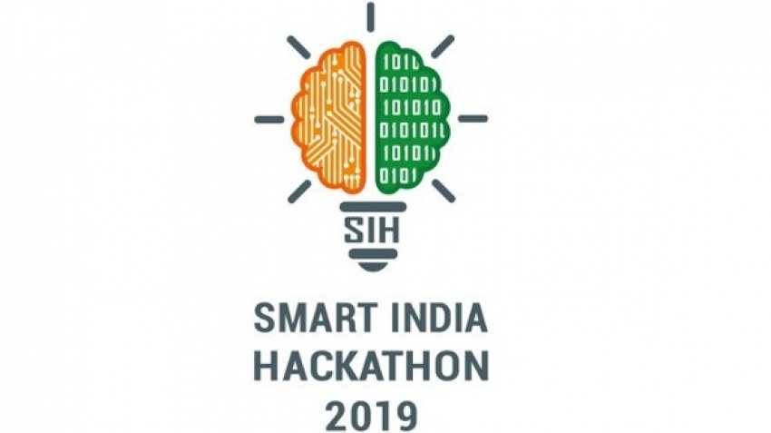
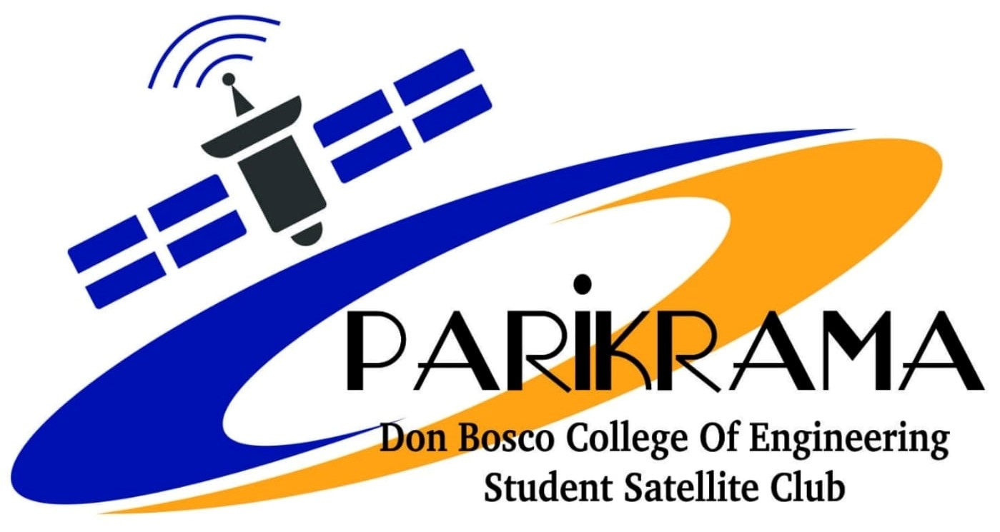
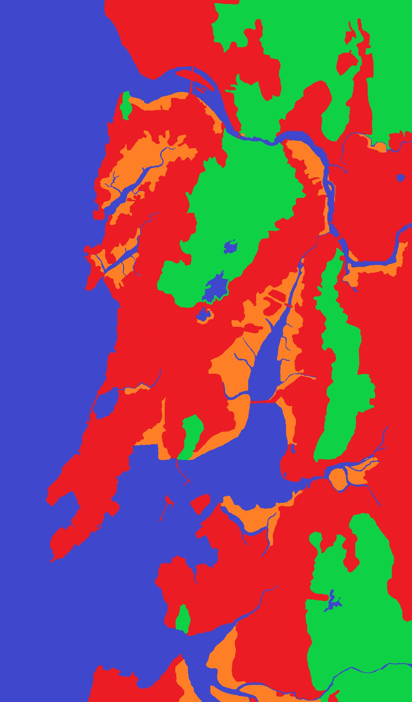
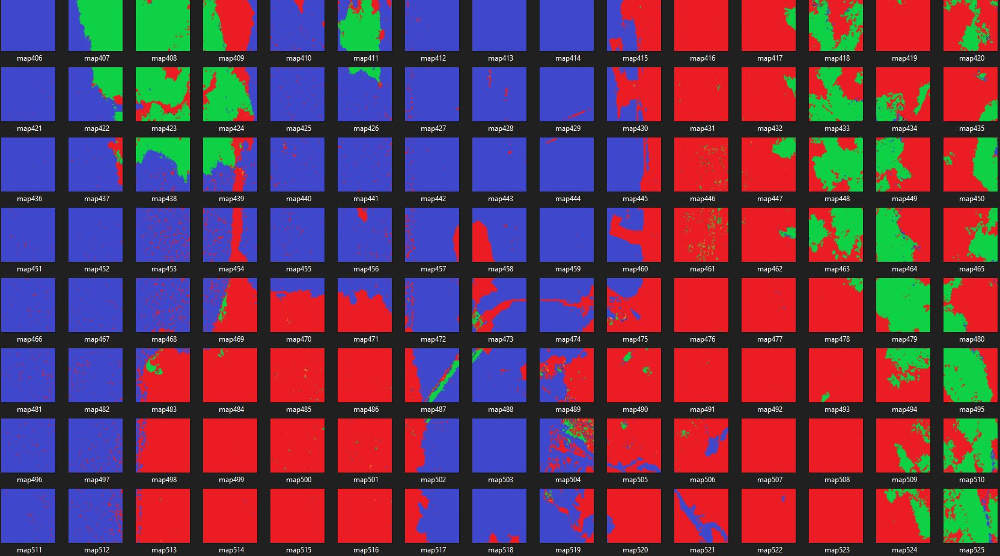
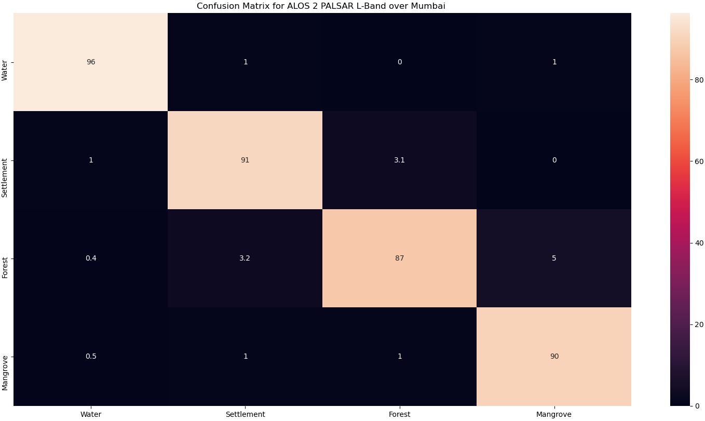

My Work and Contributions
"Success is knowing that your contribution is what helps the collective."
-Adrian Grenier

Smart India Hackathon
Finalist in the Hardware Edition of the
7 day national hackathon.
Lead designer and project supervisor.
Designed and implemented a prototype within 3 days that could determine boiler pipe health from the inside which would allow selective part replacement, potentially saving an estimated of $1.5 Million over 5 years

Student Satellite
Founder Member and Communication Systems Lead.
Led team that interfaced the RF communcation recievers with reciever antenna. Helped design and fabricate Cross-Dipole Antenna to establish communication link between ground station and NOAA weather satellites. Involved in processing of Telemetery data

Research and Publications
IEEE student member since 2018. A part of the IEEE local chapter.
A list of my current and upcoming publications can be accessed from here.
Student outreach officer of the
Institution's Innovation Council. Helped organise events and seminars related to entrepreneurship, image transforms, machine learning and deep learning
A collection of my personal projects.

Semantic Segmentation of PolSAR images
Capstone project for the partial fulfilment of B.Engg degree.
Developed using the full suite of Deep Learning packages like Keras, TensorFlow, GDAL in Python.The project is an end to end Expert System to pre-process PolSAR T3 matrix and semantically segment the microwave backscatter into various land covers

Sliced Bread
The best invention after Sliced Bread!
This is an application developed using NumPy, Pandas and Tifffile in Python that automatically analyses an image and create its tiles.
This application has its use in Deep Learning where large images sometimes need to be made into smaller tiles in order to reduce computational complexity of the program.
Whats even better is that it can stitch those images back and recreate the larger image, providing a lossless transition from input to output.

ConMat
ConMat is an application developed using
Open-CV, NumPy, Keras and Seaborn that is used to evaluate the results of Semantic Segmentation of PolSAR images by comparing the ground truth and rendered image. The application helped speed up the evaluation process by almost 300% . The application can be used to compare all types of rendered images with ground truth regardless of the source or sensor.